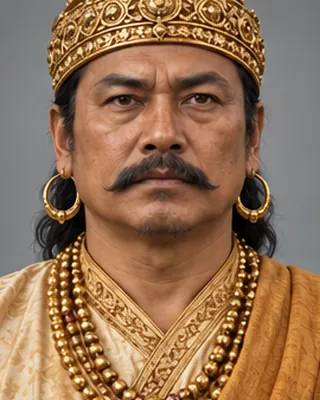

1562–1563
নৰনাৰায়ণ
r. 1540–1587 · Second Koch king

Took the Koch kingdom to its peak with his brother Chilarai as commander. Introduced the Narayani silver coin; Sankardev's teaching spread in his time.
Infobox gives 1554–1587; text gives 1540. Died 1587 (some sources 1588).
Record confidence: high.